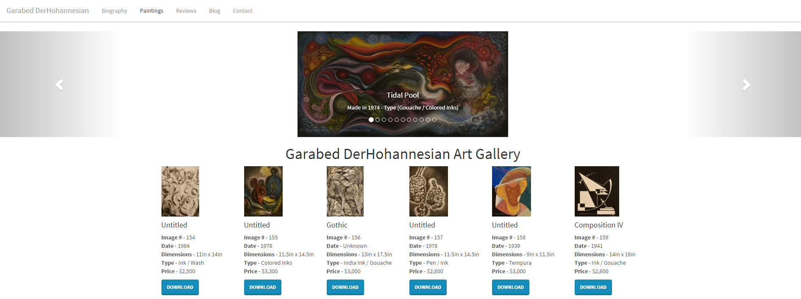
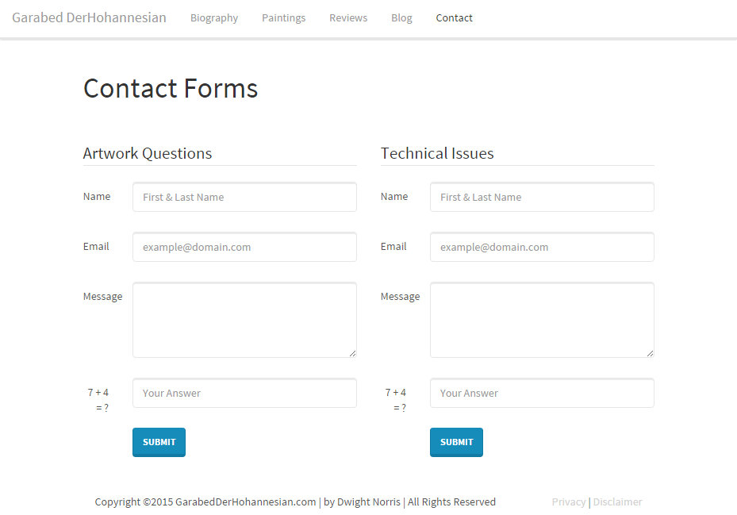

Garabed DerHohannesian
The artist Garabed DerHohannesian was a well known amongst Bostonians for his abstract impressionist work. His artwork is displayed at the Guggenheim Museum, Museum of Modern Art and the Boston Public Library.
Visit Garabed DerHohannesian
Introduction
Garabed DerHohannesian was a renowned artist in the Boston area. He is no longer living, but his son contacted me looking for help putting together a website to showcase his work to the world and to keep a digital copy for the family. The website also provides information about him that would help identify unsigned artwork. I built this website from scratch as I would have to do some changes later as the project increased in scope. The requirements required me to use Garabed's portrait, list his artwork with detailed data beneath it, allow user to download a watermarked copy of the image (I created these myself), create a contact page. I added a Wordpress powered blog by request after the project was complete.
My Work
After spending an hour going through the requirements that Mr. DerHohannesian had outlined, I assured him that I could complete the tasks as written. He had a deadline of 2 weeks because people were contacting about acquiring his father's artwork, but had no way to see what was available and the prices.
I spent a couple hours planning out the website and listing key details that were needed. This was my first paid web development project and I wanted my product to provide all the functionality the customer wanted. I started out with wireframes for the main webpages and then went deeper into the technologies I would need to use.
I used HTML, CSS, Bootstrap and Javascript for most of the website. To create a contact form to POST information, I used PHP because I had done it before. Bootstrap's features helped me speed my production up with it's ease of creating buttons, responsive layouts and images and slideshows. Setting a Content Management System (CMS) such as Wordpress was very interesting. I used it solely to create a basic blog. I am using it on this website as well.
I completed the work between September 9th to September 12th 2015 (23.5 hours). I made a small update to the images by request of the customer on September 16th 2015 (1 hour) and added the blog on September 30th 2015 (3 hours).
Result
At the completion of the project, I contacted Mr. DerHohannesian that his website was complete. Needless to say, he was very happy with the outcome and told many of his colleagues. He is a well known poet in the Boston area and has been published and interviewed on closed circuit television for his work.
I am also happy with my first project and the fact that I completed it in the timeline. I learned a lot during this project about what technologies are needed to do certain things, but just as importantly I learned how to interface with a customer. My ability to make web development time estimates and technology decisions has improved greatly. I have also alerted Mr. DerHohannesian that I can improve upon the website in the future once I have learned the MEAN stack for Full Stack Web Development. He is more than happy to talk about upgrading the website when I am ready.
You Can Hire Me!
I would love to help you create a website you have thought about or improve one you already have. Click the button below and I will respond promptly.
Contact Me